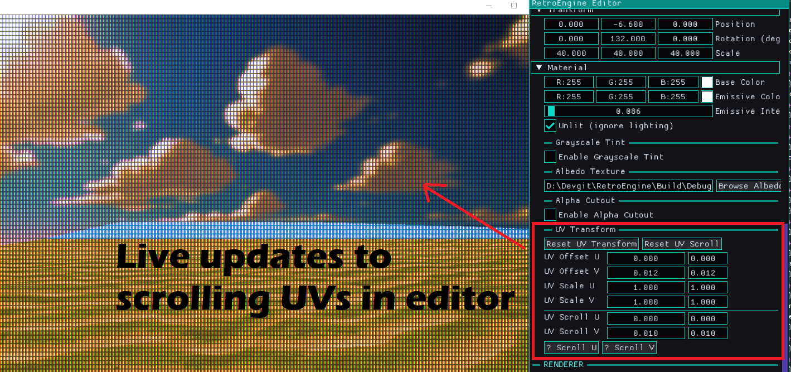
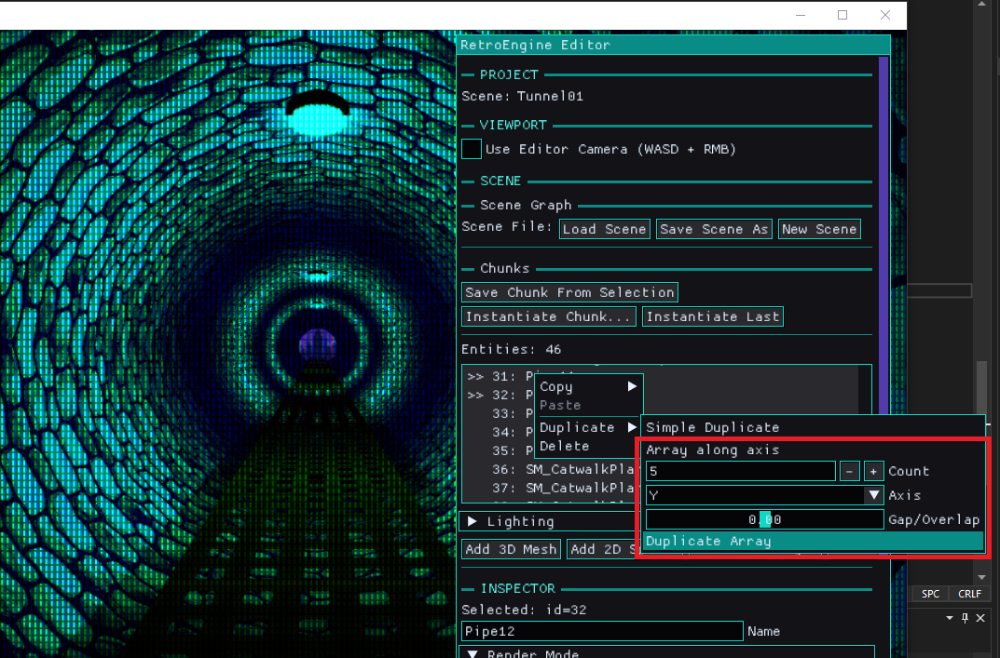

Iteration Speed Is the Real Feature
This dev log covers a handful of changes from the past week, but they all came from the same place. I was trying to build more, faster, and I kept running into tiny bits of friction that made everything feel heavier than it should.
None of this work started as “big systems.” It was more like: I tried to do something normal for level building, hit a wall, fixed the wall, then immediately hit the next one.
The good news is that this is the kind of progress I actually like. There is a lot of visual feedback from these changes, and they lend themselves to expanding features in the future. So I had a lot of fun with these updates.
UV Scrolling Needed to Be a Material Feature
First up was animated UVs. I already had UV scrolling working for sprites, and it was useful in that classic retro way. Water movement, conveyor belts, screens, signs. The kind of motion that adds life without turning everything into a physics problem.
The issue was that it only existed on the sprite side, because it was an early prototype feature, not a full system. Mesh materials already had UV offset and UV scale, but there was no actual animation path for them. That meant two different mental models for the exact same idea, and I hate that.
So I moved UV scrolling into the unified material parameters. Not a mesh feature. Not a sprite feature. A material feature. The renderer just consumes the final values. It never mutates material state during draw. This was a hard line I had to learn. Gotta wait and make sure you aren't mutating data when the GPU might still be using it.
Now both sprites and meshes can scroll UVs using the same fields. Scroll speed accumulates into UV offset during the scene update. The GPU sees a stable material layout. The editor exposes one workflow. Everything feels more alighned with better parity.

This kind of thing is exactly why I keep the engine opinionated. I do not want a bunch of special cases that slowly become an invisible second engine.
The Part Where I Broke Everything
Of course, I broke rendering while wiring this up. Everything went dark, and for a minute I had that classic feeling of “cool, I guess I ruined the engine.”
It was my fault. I changed the CPU material layout, and I did not update the GPU constant buffer layout to match. So the shader was reading garbage, and the scene looked like it had been unplugged.
This is one of those Direct3D 12 lessons that you only learn by getting smacked in the face. If CPU and GPU disagree, nothing politely warns you. It just fails in whatever way it feels like failing.
Once I brought the layouts back into exact alignment, everything snapped back instantly. Annoying mistake, but also a good reminder. RetroEngine is at its best when it fails loudly and immediately. While annoying, much better than staying silent about things. Silent correctness is a trap.
Serialization Rules: Old Scenes Should Not Change
Adding material fields meant touching scene save and load, which is always the part where you can accidentally ruin your own history. I want scenes to be durable artifacts, not fragile snapshots.
The rule I followed was simple: new fields should be opt-in, safe, and boring. Old scenes should load and look identical.
So the new fields are read conditionally and default to “off” behavior. No UV animation unless you authored it. No alpha cutout unless you asked for it. If I open a scene from last month, I do not want a surprise. I had to test a bunch of older scenes at this point to make sure things were solid, and they ultimately were.
Smart Duplicate Was Useful, Then Immediately Not Enough
After materials, the week shifted into editor work. I wanted to build real spaces faster. The first obvious tool was smarter duplication.
Basic duplicate is fine, until you try to actually build something. Things overlap. Spacing becomes guesswork. Rotation breaks alignment. Imported meshes do not even know their own size unless you teach them. I'm just finding it tedious and getting anoying. Laying out some tunnels became a chore.
So I added local-space AABBs at the source. OBJ meshes compute their bounds once at import time by scanning vertex positions. That gets cached, and entities using that mesh copy the bounds so they have real spatial data to work with. Built-in meshes get sane fallback bounds.
Then I added a small utility to measure world-space extents correctly. Scale, rotation, and translation included. It transforms the eight AABB corners into world space and projects them onto an axis. That sounds like overkill until you see it work on rotated content. Then it feels like the minimum.
With that in place, smart duplication became straightforward. Duplicate along X, Y, or Z. Specify count. Specify a gap. Spacing is edge-to-edge, not arbitrary offsets. All very simple, targeted and easy to use. Nothing fancy but certainly a game changer.

I was excited for a few minutes. Then I realized something. Even with smart duplicate, a lot of level building is still repetitive. You build the same little vignette, again and again, just in different places. And at that point, duplication becomes a band-aid for the real problem. I decide to keep it, but also explore what my other options are.
Chunks Are Canon
The next step was chunks. Not prefabs. Chunks.
A chunk is just a saved group of entities. It gets saved as editor-only JSON. When you spawn it, it instantiates into the scene as normal entities. No linking. No override graphs. No hidden dependency tree. After it spawns, it is just content, the same as anything else in the scene. No "gotchas" (win).
This is exactly what I want from RetroEngine. Reuse without baggage. Fast iteration without inventing a whole new runtime concept.

This immediately changed how the editor feels. Instead of building everything from scratch every time, you can build a good “vignette" once and stamp it into the world. Hallway segments. Door frames. Little prop clusters. Anything that you would naturally think of as a "chunk" of content. Again, not possible without the previous AABB cache work, so nothing lost. But something better.
Multi-Selection and Group Editing Without Groups
Chunks also exposed a problem right away. If you can select multiple entities, you need to be able to move them together. Otherwise you are just selecting multiple things to feel sad about it.
I did not want to add group objects to the engine. Groups are editor intent, not scene truth. So the solution is delta-based editing.
Transform sliders apply a delta change, and that delta gets applied to all selected entities. Each entity keeps its own transform. Nothing becomes owned by a new container type. It stays simple, and it stays predictable, I'm just shifting things around in the same framework, not changing anything really.
Next: A Construction Plane, Not a Full Gizmo System
At this point, another limitation became obvious. Selection is still list-driven. You cannot click in the viewport. You cannot place content spatially in a physical way yet.
It would be easy to jump straight to full 3D picking and gizmos. It would also be easy to accidentally sign up for a bunch of complexity I do not want yet. At the very least, this would demand another render pipeline for editor size gizmos on top of the rendered scene and imgui.
The direction that feels right for RetroEngine is a construction grid. An editor-only construction plane rendered directly into the main viewport. It is not “the ground.” It is a movable interaction surface, and eventually it becomes the construction site where chunks get placed.
The important part is what it does not do. It does not own entities. It does not store occupancy. It does not affect runtime. It is a calculator and a visual reference, not a data structure with authority. Better put, its an authoring tool, but changes NOTHING about the underlying systems that govern content.
Supported planes will start with XZ for top-down layout. XY for vertical construction is also on the table. The goal is a disciplined stepping stone toward spatial editing, not a sudden leap into “full editor mode.”
What This Enables
None of these features exist in isolation. UV scrolling makes it easier to add life to environments without expensive tricks. Alpha cutout adds useful retro-shaped detail while keeping depth predictable. Smart duplicate makes layout faster when you are roughing in a space. Chunks make repetition feel like a tool instead of a punishment.
The real win is that building scenes is getting less tedious. RetroEngine is still constrained on purpose, but it is becoming more usable inside those constraints. That is the balance I care about. The engine should have opinions, but it should not fight me. I genuinly believe that limitation breeds creativity. So the engien is going to be limited, by design. But I truely believe the outcome will be better for it.
Next
Next up is not some giant feature. The next step is to render that construction grid into the main viewport, support plane switching, and make spacing adjustable. No clicking yet. Just getting the visual and the concept in place.
Then I want to build more scenes. That is still the real test. If the tools hold up under real use, the next missing piece will reveal itself the same way this week did. Usually by annoying me at the exact wrong moment.
On the horizon, I also consider physics. Setting up the cached AABB for objs on import is the first step in eventual collision. And the reaction to collision data is physics. I'm not ready to tackle this yet, but I'm starting to turn my eye to it more and more.